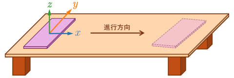

【解析例】
■ 水平な粗い面を滑る運動（1次元の運動）
2次元または3次元のデータに対して主成分分析を行い，得られた主成分の方向に座標軸をとることによって，物体の運動を調べるのに適した座標軸に変換する．主成分分析では，多変量のデータに対してデータの分布が最も散らばっている（分散が最も大きい）方向に軸を取り，これを第1主成分の軸とする．第1主成分の軸に直交して，次に分散が大きくなる方向が第2主成分の軸となる．以下同様に，第3主成分，第4主成分，・・・の軸が定まる．

【解析例】
2次元または3次元のデータに対して主成分分析を行い，得られた主成分の方向に座標軸をとることによって，物体の運動を調べるのに適した座標軸に変換する．主成分分析では，多変量のデータに対してデータの分布が最も散らばっている（分散が最も大きい）方向に軸を取り，これを第1主成分の軸とする．第1主成分の軸に直交して，次に分散が大きくなる方向が第2主成分の軸となる．以下同様に，第3主成分，第4主成分，・・・の軸が定まる．